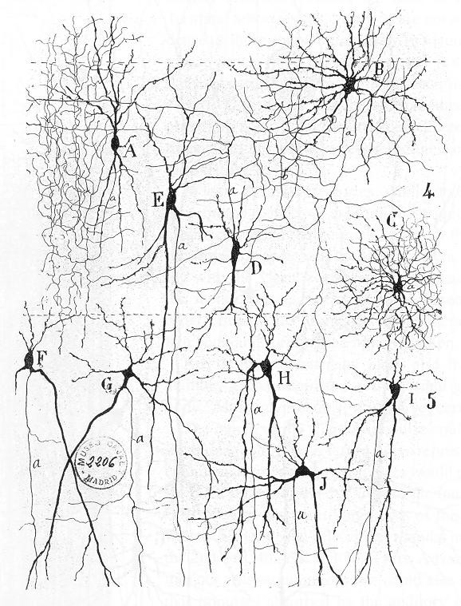

There is active research to make computers out of many promising new types of technology, such as optical computers, DNA computers, neural computers, and quantum computers. Most computers are universal, and are able to calculate any computable function, and are limited only by their memory capacity and operating speed. However different designs of computers can give very different performance for particular problems; for example quantum computers can potentially break some modern encryption algorithms (by quantum factoring) very quickly.
Optical or photonic computing uses photons produced by lasers or diodes for computation. For decades, photons have promised to allow a higher bandwidth than the electrons used in conventional computers (See optical fibers). Most research projects focus on replacing current computer components with optical equivalents, resulting in an optical digital computer system processing binary data. This approach appears to offer the best short-term prospects for commercial optical computing, since optical components could be integrated into traditional computers to produce an optical-electronic hybrid. However, optoelectronic devices lose 30% of their energy converting electronic energy into photons and back; this conversion also slows the transmission of messages. All-optical computers eliminate the need for optical-electrical-optical (OEO) conversions, thus lessening the need for electrical power. Application-specific devices, such as synthetic aperture radar (SAR) and optical correlators, have been designed to use the principles of optical computing. Correlators can be used, for example, to detect and track objects, and to classify serial time-domain optical data.
DNA computing is a branch of computing which uses DNA, biochemistry, and molecular biology hardware, instead of the traditional silicon-based computer technologies. Research and development in this area concerns theory, experiments, and applications of DNA computing. The term "molectronics" has sometimes been used, but this term has already been used for an earlier technology, a then-unsuccessful rival of the first integrated circuits; this term has also been used more generally, for molecular-scale electronic technology.
Hello A wetware computer is an organic computer (which can also be known as an artificial organic brain or a neurocomputer) composed of organic material such as living neurons. Wetware computers composed of neurons are different than conventional computers because they are thought to be capable in a way of "thinking for themselves", because of the dynamic nature of neurons. While wetware is still largely conceptual, there has been limited success with construction and prototyping, which has acted as a proof of the concept's realistic application to computing in the future. The most notable prototypes have stemmed from the research completed by biological engineer William Ditto during his time at the Georgia Institute of Technology. His work constructing a simple neurocomputer capable of basic addition from leech neurons in 1999 was a significant discovery for the concept. This research acted as a primary example driving interest in the creation of these artificially constructed, but still organic brains.
Quantum computing is the study of a non-classical model of computation. Whereas traditional models of computing such as the Turing machine or Lambda calculus rely on "classical" representations of computational memory, a quantum computation could transform the memory into a quantum superposition of possible classical states. A quantum computer is a device that could perform such a computation. Quantum computing began in the early 1980s, when physicist Paul Benioff proposed a quantum mechanical model of the Turing machine. Richard Feynman and Yuri Manin later suggested that a quantum computer could perform simulations that are out of reach for regular computers. In 1994, Peter Shor developed a polynomial-time quantum algorithm for factoring integers. This was a major breakthrough in the subject: an important method of asymmetric key exchange known as RSA is based on the belief that factoring integers is computationally difficult. The existence of a polynomial-time quantum algorithm proves that one of the most widely used cryptographic protocols is vulnerable to an adversary who possesses a quantum computer. However, it is theoretically accepted that quantum computers could equally be used to counteract against adversarial actions of this kind with the laws of quantum mechanics applied in this cryptographic capacity (through use of quantum computers) paving the way to quantum cryptography. Experimental efforts towards building a quantum computer began after a slew of results known as fault-tolerance threshold theorems. These theorems proved that a quantum computation could be efficiently corrected against the effects of large classes of physically realistic noise models. One early result demonstrated parts of Shor's algorithm in a liquid-state nuclear magnetic resonance experiment. Other notable experiments have been performed in superconducting systems, ion-traps, and photonic systems. Despite rapid and impressive experimental progress, most researchers believe that "fault-tolerant quantum computing [is] still a rather distant dream". On 23 October 2019, Google AI, in partnership with the U.S. National Aeronautics and Space Administration (NASA), officially claimed that its Sycamore quantum processor completed in 200 seconds, a task the equivalent of which would take a state-of-the-art supercomputer approximately 10,000 years to complete. In response, one prominent researcher declared that a quantum computing revolution equivalent to the modern digital computer will require "immense engineering, and probably further insights as well." There is an increasing amount of investment in quantum computing by governments, established companies, and start-ups. Current research focuses on building and using near-term intermediate-scale devices and demonstrating quantum supremacy alongside the long-term goal of building and using a powerful and error-free quantum computer. The field of quantum computing is closely related to quantum information science, which includes quantum cryptography and quantum communication.
Of all these abstract machines, a quantum computer holds the most promise for revolutionizing computing. Logic gates are a common abstraction which can apply to most of the above digital or analog paradigms. The ability to store and execute lists of instructions called programs makes computers extremely versatile, distinguishing them from calculators. The Church–Turing thesis is a mathematical statement of this versatility: any computer with a minimum capability (being Turing-complete) is, in principle, capable of performing the same tasks that any other computer can perform. Therefore, any type of computer (netbook, supercomputer, cellular automaton, etc.) is able to perform the same computational tasks, given enough time and storage capacity.
A computer will solve problems in exactly the way it is programmed to, without regard to efficiency, alternative solutions, possible shortcuts, or possible errors in the code. Computer programs that learn and adapt are part of the emerging field of artificial intelligence and machine learning. Artificial intelligence based products generally fall into two major categories: rule based systems and pattern recognition systems. Rule based systems attempt to represent the rules used by human experts and tend to be expensive to develop. Pattern based systems use data about a problem to generate conclusions. Examples of pattern based systems include voice recognition, font recognition, translation and the emerging field of on-line marketing.